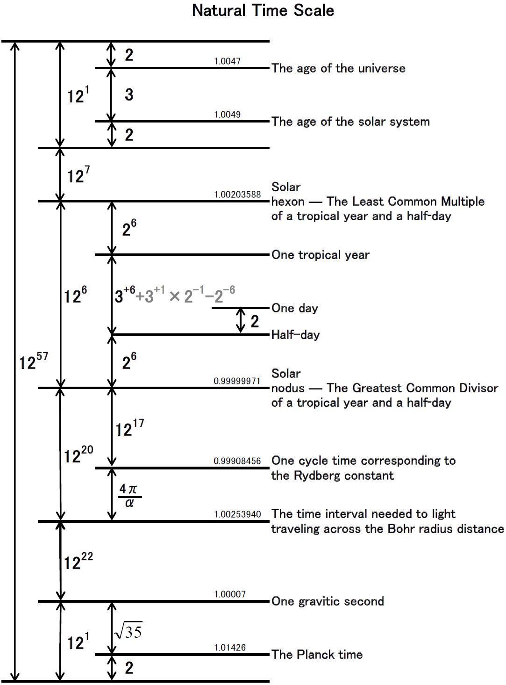

")
A dozenal-based structural unit system
as a structure identified by Takashi Suga
The official entry point for the Universal Unit System (UUS) and its specific realization, the Harmonic System — a structurally compressed, dozenal-based framework linking physical constants, Earth-local scales, and calendar symmetry
This site includes formal papers, executable specifications, interactive diagrams, a cross-linked glossary, machine-readable resources, and AI-oriented documentation. The main README and the sections below provide entry points to the evolving collection.
For the concise introduction for newcomers, see the main README:
AI-Oriented ResourcesFAQExternal Links
External References to This Project
|
 Natural Time Scale — dozenal-based temporal hierarchy |
Takashi Suga (Dr.), the maintainer of this project, is an independent researcher based in Japan, specializing in unit system design, calendrical studies, and mathematical structures in physical constants. His work is published on Academia.edu and maintained on GitHub.